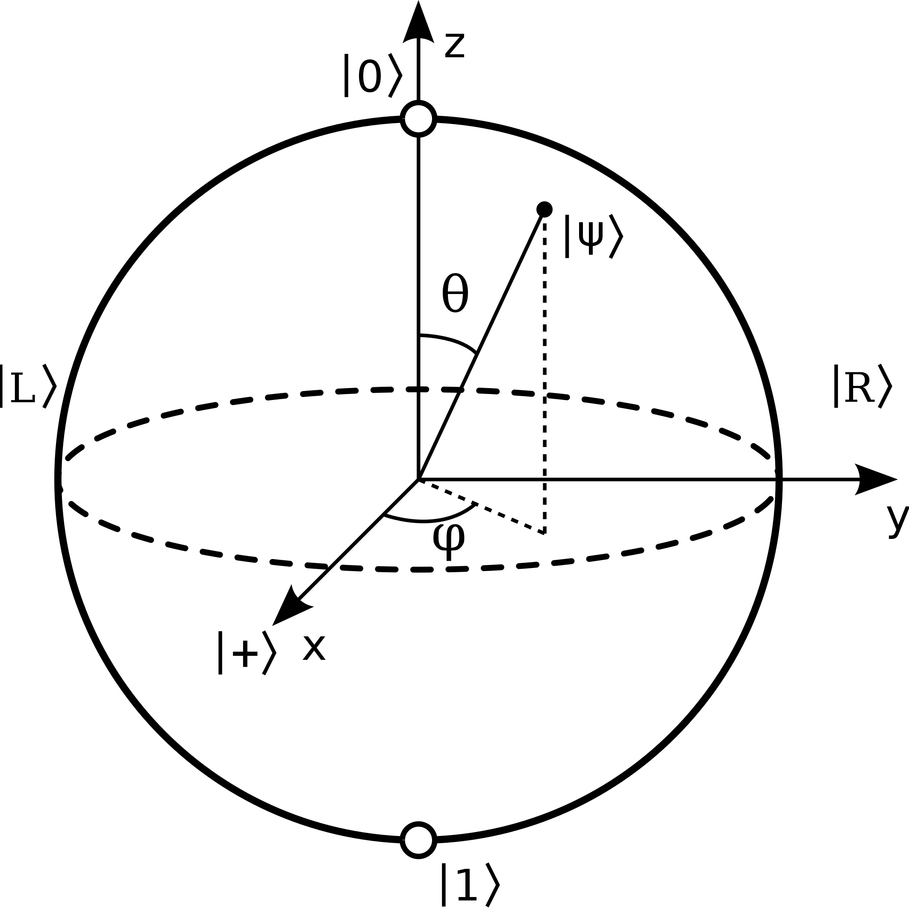
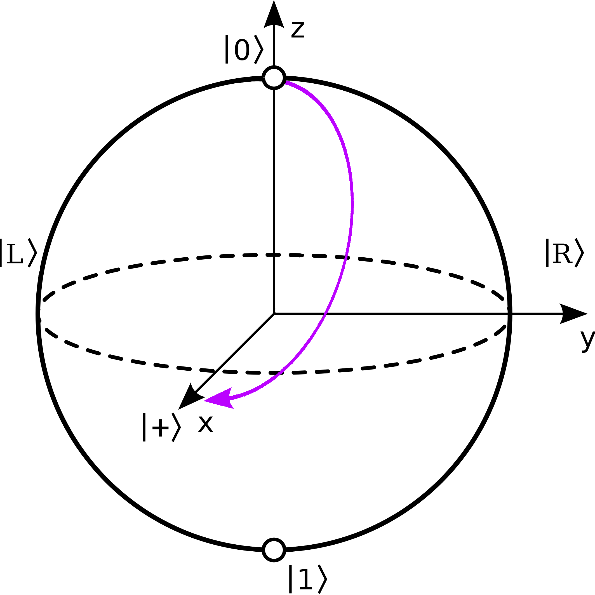
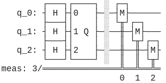
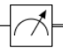
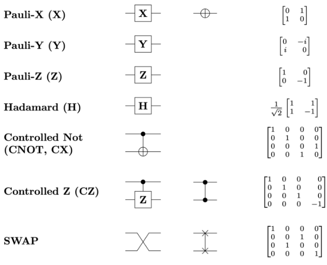
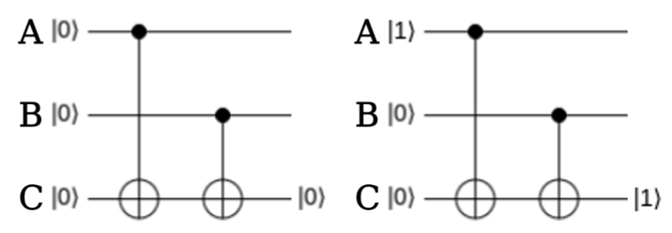
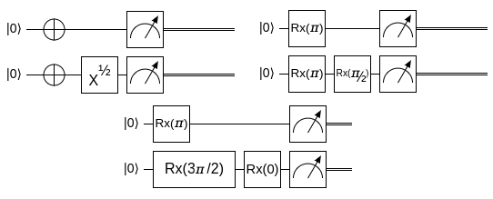
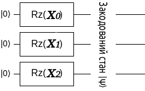
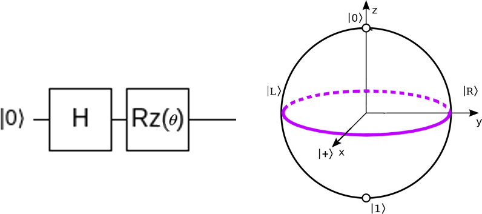

Квантове Машинне Навчання
Поговоримо про чергову відносно нову наукову тему, що її нині погано розкрито нашою мовою. Припускаю, якщо ви тут, то знаєте про комплексну лінійну алгебру, трохи про мінімізацію та постановки задач машинного навчання. Інакше вас може налякати те, що тут відбувається, а мені б цього не хотілося.
Раджу спершу ознайомитися з простішою сторінкою, яка спочатку дублює цю, а далі говорить про більш фундаментальні для квантових обчислень речі, ніж квантове машинне навчання, й до того ж детальніше. Усі сторінки пов'язані з квантовими обчисленнями можна подивитися тут.
Як правило, читаючи англомовну літературу чи дивлячись початкові лекції з КМН (квантового машинного навчання), ви побачите подібну таблицю. Вона й справді допомагає структурувати поняття КМН. Ми можемо поєднувати квантові обчислення (й квантову фізику загалом) з машинним навчанням у різні способи: можна запускати квантові алгоритми машинного навчання для класичних даних та задач, а можна класичні алгоритми для квантових даних і задач, або взагалі квантові алгоритми на квантових даних (QQ).
| Алгоритм\Дані | Класичні | Квантові |
| Класичний | CC | QC |
| Квантовий | CQ |
Треба розуміти, що квантові комп'ютери, в цілому, задумувались, як машини з кращою можливістю обчислення задач квантової фізики. Однак, їх можна використовувати для інших задач, зокрема КМН можна використовувати на задачах від класичних математичних до задач квантової хімії. Варто зазначити, що знаходження, для чого саме "в класичному житті" застосовувати ці технології – все ще відкрите питання. Про переваги квантових комп'ютерів перед звичайними важко сказати однозначно. Справа в тому, що на деяких задачах звичайні комп'ютери навіть швидше, а сучасні квантові комп'ютери взагалі й не дуже потужні. Існує навіть дискусія, чи фізично можливо побудувати квантові комп'ютери достатньо великі для виконання практичних задач. При цьому, квантове машинне навчання є одна з найперспективніших галузей у цьому плані, адже тут не потрібна настільки велика потужність обчислень. Основні ж переваги пов'язані з убудованим паралелізмом та можливістю "заплутувати" кубіти (аналоги бітів). Для квантового машинного навчання нас більше цікавитиме перше.
Паралелізм (тобто виконання декількох обчислень одночасно) виникає через те, що квантові біти можуть бути у проміжних станах між 0 та 1, а будь-які дії над таким кубітом "у суперпозиції" будуть умовно одночасно проводитись і над ним у стані 0, і над ним у стані 1. Це важко збагнути, не переглянувши купу різних прикладів, тому я раджу спочатку спиратися виключно на математику в розумінні всього що відбувається.
- Підґрунтя квантових обчислень
- Трохи про вимірювання
- Квантові схеми загалом
- Варіяційні схеми
- Квантовий класифікатор
- VQE
Підґрунтя квантових обчислень
Почнемо з основ квантових обчислень загалом. Я намагатимуся пояснити всі ідеї з точки зору математики й комп'ютерних наук, адже цей підхід ближче мені.
Кубіт (з англ. Qubit) – аналог звичайного комп'ютерного біту, одиниця інформації квантового комп'ютера. Може приймати значення \(|0⟩\) та \(|1⟩\) (пояснення дужок вигляду \(|\cdot⟩\) трохи згодом, наразі вважайте, що вони просто частина назви вектора), аналогічно звичайному біту, однак також має додаткові стани.
Кубіти математично передаються одиничним вектором у \(\mathbb{C}^2\). Тобто, наприклад, \(|ψ⟩ = \frac{1}{\sqrt{2}}\begin{pmatrix}1 \\ 1\end{pmatrix}\) – можливий стан кубіта. Важливо, що стани \(|0⟩\) та \(|1⟩\) суть базисними. \[|0⟩ = \begin{pmatrix}1 \\ 0\end{pmatrix}\] \[|1⟩ = \begin{pmatrix}0 \\ 1\end{pmatrix}\] Отже, усі інші стани \(|ψ⟩ = \begin{pmatrix}a \\ b\end{pmatrix}\) суть лінійними комбінаціями \(a|0⟩ + b|1⟩\) базисних станів та називаються станами суперпозиції. Також виділяють ще 4 умовно основних стани \(|+⟩ = \frac{1}{\sqrt{2}}\begin{pmatrix}1 \\ 1\end{pmatrix}; |-⟩ = \frac{1}{\sqrt{2}}\begin{pmatrix}1 \\ -1\end{pmatrix}; |R⟩ = \frac{1}{\sqrt{2}}\begin{pmatrix}1 \\ i\end{pmatrix}; |L⟩ = \frac{1}{\sqrt{2}}\begin{pmatrix}1 \\ -i\end{pmatrix}\). Ми називаємо \(|+⟩, |-⟩\) базисом за віссю \(X\); \(|R⟩, |L⟩\) – базисом за віссю \(Y\); \(|0⟩, |1⟩\) – базисом за віссю \(Z\). Всі ці базиси ортонормальні, тобто кут між цими векторами – прямий, а довжина їх – 1. Однак для векторів з комплексних чисел уявляти все це геометрично дуже важко. Тому застосовують такий метод візуялізації як сфера Блоха (малюнок 1), на якій кути подвоєні, тобто перпендикулярні вектори тут протилежні й знаходяться на одній вісі.
Сфера Блоха дає графічне розуміння про те, що відбувається зі станом кубіту. Це дуже зручний спосіб візуалізації векторів, та треба розуміти, що це ніяк не правдиве зображення, а лише схема. Два різних стани кубіту можуть позначатися однаково на сфері Блоха, це відбувається через подвоєння кутів між векторами. Надалі ми часто звертатимемося до цієї сфери задля створення інтуїтивного розуміння дивних речей.
Квантовий комп'ютер змінює стан кубіту, однак стан має залишатися одиничним вектором у комплексних числах, а всі операції з кубітами - лінійні (доведення цього факту, на жаль, вимагає трохи складніших термінів з квантової фізики). Тому квантові ґейти (або квантові вентилі, тобто окремі дії) на окремих кубітах можна записати математично у вигляді унітарних комплексних матриць \(\hat{U}\), тобто таких що \(\hat{U}^†\hat{U} = \hat{I}\), де \(\hat{I}\) – одинична матриця, \(\hat{U}^†\) – транспонована косплексно-спряжена (або ермітово-спряжена) до \(\hat{U}\). З цього випливає, що всі квантові алгоритми мають бути оборотними, бо до всіх унітарних операцій можна знайти обернені. Власне, для якоїсь унітарної матриці \(\hat{U}\), оберненою буде \(\hat{U}^†\) за означенням.
Розглянемо, наприклад, дуже популярний ґейт Гадамара (або Адамара, з англ. Hadamard gate): \[\hat{H} = \frac{1}{\sqrt{2}}\begin{pmatrix}1 & 1 \\1 & -1\end{pmatrix}\] Цей ґейт має наступні корисні властивості: \[\hat{H}|0⟩ = |+⟩\] \[\hat{H}|1⟩ = |-⟩\] Як правило, на початку виконання квантового алгоритму, всі кубіти мають стан \(|0⟩\), тому якщо ми хочемо перевести нас у стан суперпозиції \(|+⟩\), ми користуємось ґейтом Адамара. Цікаво, що всі ґейти можна сприймати, як повороти на сфері Блоха. Ґейт Адамара, наприклад, повертає на пів оберта відносно вісі, що проходить рівно між віссю \(X\) та \(Z\) (малюнок 2). Не важко показати, що застосувавши цей ґейт Адамара двічі, ми отримаємо початковий стан: \[\hat{H}\hat{H}|0⟩ = \hat{H}|+⟩ = |0⟩\] Отже, \(\hat{H}\hat{H} = \hat{I}\) (що так само можна отримати алгебраїчно).
Звісно, є й інші ґейти, які ми будемо використовувати: \[\hat{X} = \begin{pmatrix}0 & 1 \\1 & 0\end{pmatrix}; -\text{ Х-ґейт або X-not-ґейт, тобто ґейт заперечення; пів оберта відносно вісі } X\] \[\hat{X}|1⟩ = |0⟩\] \[\hat{X}|0⟩ = |1⟩\] Аналогічні обертання існують і відносно осей \(\hat{Y} = \begin{pmatrix}0 & -i \\i & 0\end{pmatrix}\) та \(\hat{Z} = \begin{pmatrix}1 & 0 \\0 & -1\end{pmatrix}\), але вони не так часто вживаються.
Як я вже сказав, усі ґейти можна сприймати як обертання на сфері Блоха на певний кут \(\theta\). Саме тому ми можемо узагальнити вигляд однокубітного квантового ґейту в залежності від осі повороту: \[\hat{RX}(θ) = \begin{pmatrix}\cos\frac{θ}{2} & -\sin\frac{θ}{2}\\ \sin\frac{θ}{2} & \cos\frac{θ}{2}\end{pmatrix}\] \[\hat{RY}(θ) = \begin{pmatrix}\cos\frac{θ}{2} & -i\sin\frac{θ}{2}\\ \sin\frac{θ}{2} & \cos\frac{θ}{2}\end{pmatrix}\] \[\hat{RZ}(θ) = \begin{pmatrix}e^{-\frac{i\theta}{2}} & 0\\ 0 & e^{\frac{i\theta}{2}}\end{pmatrix}\] де, скажімо, \(\hat{RX}(θ)\) повертає стан кубіту на кут \(θ\) за віссю \(X\). Це доволі важливо для квантового машинного навчання. Можна ще далі узагальнити для довільної вісі, хоча це робиться не так часто: \(\hat{R}_{\vec{v}}(θ) = \exp[-\frac{iθ\hat{\vec{σ}}\vec{v}}{2}]\), де \(θ\) – кут обертання; \(\vec{v}\) – тривимірний одиничний вектор осі обертання на сфері Блоха; \(\hat{\vec{σ}}\) – специфічний об'єкт, вектор з матриць вигляду \(\hat{\vec{σ}}=\{\hat{X}, \hat{Y}, \hat{Z}\}\), тобто \(\hat{\vec{σ}}\vec{v} = (\hat{X}v_x + \hat{Y}v_y + \hat{Z}v_z)\).
Квантові ґейти можуть діяти не тільки на один кубіт, бо й у комп'ютерах більше одного кубіту як правило. Якщо щоб математично описати стан системи з одного кубіта ми використовуємо вектор з двох елементів, то для для двох кубітів нам знадобиться вектор з \(\mathbb{C}^4\). При тому, наприклад, якщо перший кубіт у стані \(|1⟩\), а другий у \(|0⟩\) то загальний вектор стану системи: \[|01⟩ = |0⟩ \otimes |1⟩ = \begin{pmatrix}1 \\ 0\end{pmatrix} \otimes \begin{pmatrix}0 \\ 1\end{pmatrix} = \begin{pmatrix}1\begin{pmatrix}0 \\ 1\end{pmatrix} \\ 0\begin{pmatrix}0 \\ 1\end{pmatrix}\end{pmatrix} = \begin{pmatrix}0 \\ 1 \\ 0 \\ 0\end{pmatrix}\] де \(\otimes\) – тензорний добуток (діє як показано: ми беремо другий вектор і множимо його на всі елементи першого, як на скаляри, просто складаючи результати підряд, тобто \(a\otimes b \ne b\otimes a\)). Не важко помітити, що \(|00⟩\), \(|01⟩\), \(|10⟩\) та \(|11⟩\) формують ортонормальний базис для \(\mathbb{C}^4\), отже всі двокубітні стани виражаються через ці базові вектори (хоча не всі можна записати як тензорний добуток двох однокубітних станів, але про це я напишу в иншій статті). Якщо ж ми маємо двокубітну систему й хочемо подіяти на другий кубіт ґейтом Гадамара, а на перший – запереченням, то ми маємо створити сумісний ґейт як матрицю в \(\mathbb{C}^{4 \times 4}\): \(\hat{H} \otimes \hat{X}\), а якщо ми хочемо подіяти на перший кубіт якимсь оператором \(\hat{U}\), а другий залишити як є, то ми скомбінуємо \(\hat{U}\) та оператор ідентичности: \(\hat{I} \otimes \hat{U}\). Це відбувається через наступну дуже корисну властивість такого тензорного добутку: \[(A\otimes B)(c \otimes d) = Ac \otimes Bd\] Тобто \[(\hat{U}\otimes \hat{V})(|q_1⟩ \otimes |q_0⟩) = \hat{U}|q_1⟩ \otimes \hat{V}|q_0⟩\] де \(\hat{U}\), \(\hat{V}\) – довільні ґейти, а \(|q_0⟩\), \(|q_1⟩\) – стани наших кубітів.
Дуже популярною двокубітною операцією є CNOT-ґейт, тобто ґейт контрольованого заперечення (з англ. Controlled NOT gate) за віссю \(X\): \[\hat{CX} = \begin{pmatrix}1 & 0 & 0 & 0 \\0 & 1 & 0 & 0 \\0 & 0 & 0 & 1 \\0 & 0 & 1 & 0\end{pmatrix}\] Такий ґейт інвертуватиме або не змінюватиме перший кубіт у залежності від того чи другий кубіт у стані \(|1⟩\) чи \(|0⟩\). Увага: нумерація кубітів залежить від нас, тому я би не прив'язувався до номерів кубітів. Більше того, цей ґейт можна застосовувати, скажімо, на першому та п'ятому кубітах якоїсь великої системи (тоді матриця буде трохи іншою, але схожою). Аналогічним чином визначаються \(\hat{CZ}\) та \(\hat{CY}\), однак це нам поки не знадобиться. Приклад для CNOT-ґейту: \[\hat{CX}|01⟩ = \begin{pmatrix}1 & 0 & 0 & 0 \\0 & 1 & 0 & 0 \\0 & 0 & 0 & 1 \\0 & 0 & 1 & 0\end{pmatrix} \begin{pmatrix}0 \\ 1 \\ 0 \\ 0\end{pmatrix} = \begin{pmatrix}0 \\ 1 \\ 0 \\ 0\end{pmatrix} = |01⟩\] \[\hat{CX}|10⟩ = \begin{pmatrix}1 & 0 & 0 & 0 \\0 & 1 & 0 & 0 \\0 & 0 & 0 & 1 \\0 & 0 & 1 & 0\end{pmatrix} \begin{pmatrix}0 \\ 0 \\ 1 \\ 0\end{pmatrix} = \begin{pmatrix}0 \\ 0 \\ 0 \\ 1\end{pmatrix} = |11⟩\]
Трохи про вимірювання
Усі дії в квантовому комп'ютері мають бути оборотними, а кубіти можуть мати проміжні стани між \(|1⟩\) та \(|0⟩\), пам'ятаєте? Що ж, усе це правда, але не зовсім. Справа в тому, що по завершенню квантового алгоритма нам необхідно поглянути, в якому стані ж знаходяться його кубіти. І щойно ми це зробимо, увесь стан системи кубітів сколапситься до якогось базисного стану. Тобто ми не зможемо "побачити" кубіт, скажімо, в стані \(\frac{1}{\sqrt{2}}(|0⟩+|1⟩)\) при вимірюванні, зазвичай, ми побачимо лише або стан нуль, або стан один (хоча можна вимірювати трохи по-іншому, за іншим базисом, але суть одна: можливо побачити лише два взаємно перпендикульярних стани з усіх). Отже, наприкінці кожного алгоритму, коли ми виміряємо результат, ми цим проведемо необоротну операцію. То яка ж користь у цих станах суперпозиції? Справа в тому, що кубіт колапситься до того чи іншого стану з різною ймовірністю, залежно від свого стану, тобто нас цікавить написання алгоритмів, які з високою ймовірністю дадуть нам корисний результат при вимірюванні. У стані \(|1⟩\) імовірність кубіту колапснутися до \(|1⟩\) – сто відсотків. Кубіт у стані \(\frac{1}{\sqrt{2}}(|0⟩+|1⟩)\) з однаковою ймовірністю колапситься до \(|1⟩\) та \(|0⟩\). Це можна бачити з однакових коєфіцієнтів при базисних векторах у розкладі за базисом, за яким ми вимірюємо. Ці коєфіцієнти також називаються амплітудами. Також це можна бачити з того, що цей стан знаходиться чітко на екваторі між \(|1⟩\) та \(|0⟩\) на сфері Блоха.
Як правило, в квантових обчисленнях загалом, ми запускаємо один алгоритм на одних даних багато разів, аби отримати розподіл імовірностей (скільки разів з усіх ми отримали той чи інший стан після вимірювання), адже сама ідея квантових алгоритмів це побудувати такий, що з максимальною імовірністю (але не завжди) дає правильну відповідь. Стан, який найчастіше трапляється, називаємо відповіддю алгоритму. Іноді замість "запуск алгоритму" вживається також термін "експеримент".
Імовірність нашого стану \(|\psi⟩\) колапсувати до якогось вектору \(|v_i⟩\) буде дорівнювати: \[\mathbb{P}(|v_i⟩) = ⟨\psi|v_i⟩⟨v_i|\psi⟩ = |⟨v_i|\psi⟩|^2\] де \(⟨\psi|\) – комплексно спряжений транспонований вектор до \(|\psi⟩\), тобто для \(|ψ⟩ = \begin{pmatrix}a \\ b\end{pmatrix}\), \(⟨ψ| = \begin{pmatrix}\bar{a} & \bar{b}\end{pmatrix}\), а \(⟨ψ⟩ = \begin{pmatrix}\bar{a} & \bar{b}\end{pmatrix}\begin{pmatrix}a \\ b\end{pmatrix} = 1\). Це називається правилом Борна. Я кажу "якогось" вектору \(|v_i⟩\), бо насправді ми можемо вимірювати кубіти за іншими базисами окрім \(Z\), отже мати інші видимі стани (вектори), а не \(|0⟩\) і \(|1⟩\). Імовірності виміряти 0 та 1 для якогось довільного стану \(α|0⟩+β|1⟩\), утім, перевірити доволі просто: \[\mathbb{P}(|0⟩) = |⟨0|(α|0⟩+β|1⟩)|^2 = |⟨0|α|0⟩+⟨0|β|1⟩|^2 = |⟨0|α|0⟩+0|^2 = |α⟨0⟩|^2 = |α|^2\] \[\mathbb{P}(|1⟩) = |⟨1|(α|0⟩+β|1⟩)|^2 = |⟨1|α|0⟩+⟨1|β|1⟩|^2 = |0+⟨1|β|1⟩|^2 = |β⟨1⟩|^2 =|β|^2\] Раніше тут детальніше розповідалося про вимірювання за іншими базисами та виведення формули, але тепер, аби краще зрозуміти, яка математика за цим стоїть і чому формула саме така раджу прочитати цю частину в новій статті про більш базові поняття.
Квантові схеми загалом
Математика, звісно, добре, але записувати цілі алгоритми як послідовність використання операторів на наборі кубітів не є дуже зручно. Тому використовують певні ілюстративні діяграми, так звані квантові схеми.
Нижче наведено перелік позначень для основних операцій. Вимірювання позначається або як "ґейт" (просто схоже позначення) \(\text{M}\) (див. малюнок (3)), або як . Якщо явно не зазначено базис вимірювання, то мається на увазі стандартне вимірювання в базисі \(Z\).
Спробуймо побудувати простенькі квантові алгоритми за допомогою таких схем. Яку операцію може виконувати будь-який комп'ютер? Додавання! Що ж, побудуймо схему, що додаватиме два числа \(A\) та \(B\) у результуюче число \(С\). За числа \(A\), \(B\), \(C\) будемо поки що брати тільки 0 або 1. Додавання ми зробимо за модулем два: \[0 \oplus 0 = 0\] \[1 \oplus 0 = 1\] \[0 \oplus 1 = 1\] \[1 \oplus 1 = 0\]
Отже, на схемі має бути 3 кубіти \(A\), \(B\), \(C\). Зазвичай, усі кубіти ініціялізуються нулем, тобто \(|0⟩\). Для того аби надавати вхідним змінним \(A\) й \(B\) різних значень можна просто використовувати \(\hat{X}\), а от \(C\), думаю, логічно було б залишити в нулі спочатку. Далі додамо \(A\) до \(C\). Можете трохи подумати, яким ґейтом це краще зробити. Очевидно, він має бути на два кубіти. Гадаю, тут достатньо \(\hat{CX}\): ми обернемо \(C\) на 1, якщо \(A\) було 1, але нічого не зробимо інакше (себто коли \(A = |0⟩\)). Далі повторюємо для додавання для \(C\) та \(B\). Власне, це й усе. Залишилося виміряти наш кубіт. Погляньмо на результуючу схему:
Таку схему можна використовувати, як частину більшої, коли нам потрібна операція \(\oplus\), також відома як XOR. У якості завдання спробуйте створити схему, що додаватиме більші бінарні числа, на кшталт чисел з двох біт. Для цього вам можуть знадобитися контрольовані ґейти з більшою кількістю контрольних кубітів, наприклад \(CCX\), що інвертує цільовий кубіт тоді й тільки тоді, коли два контрольних кубіти мають стан \(|1⟩\) Також рекомендую цей сайт у якості швидкого простого способу побудови схем не за допомогою коду.
Якщо вам цікаво трохи розвинути свою інтуїцію щодо квантової механіки та квантових обчислень, можу також порадити підбірку квантових ігор, однак не загравайтесь.
Варіяційні схеми
Бажано було б до цього моменту також розглянути деякі квантові алгоритми для загального розуміння квантових обчислень, поговорити про квантову заплутаність, шум і тому подібне, адже тема варіяційних схем уже належить саме квантовому машинному навчанню. Саме тому раджу спершу все ж ознайомитися з простішою сторінкою.
Я припускаю, що вам відома класична постановка чи мета задач машинного навчання. Якщо коротко, то в машинному навчанні (особливо в науковому його застосуванні) ми намагаємось знайти функцію, яка приблизно задовольняє певним умовам, що можуть бути виражені не дуже явно. Аби підібрати функцію, що вирішуватиме нашу задачу, ми фіксуємо певну загальну форму цієї функції, але параметризуємо її. Далі, поступово підбираємо параметри, що мінімізують похибку нашої функції на даній задачі. Наприклад, ми могли б припустити, що лінійної функції достатньо для нашої задачі, тоді ми б обрали їй форму \(f(x) = w_1x+w_0\) з параметрами \(w_0, w_1\) і вирішували б задачу мінімізації за ними. Можна використовувати в якості такої функції велику нейронну мережу, або навіть якісь періодичні функції, але ми будемо використовувати параметризовані квантові схеми або варіяційні схеми (variational circuits, parametrized quantum circuits, ansatz).
Ідея майже аналогічна до попередньої: ми фіксуємо певну форму квантової схеми для якогось алгоритму, але параметризуємо її. Як це зробити? У нас, насправді, вже є інструмент для цього. Як я зауважив раніше, однокубітні квантові ґейти можна розглядати як повороти на сфері Блоха на певний кут \(\theta\) відносно якоїсь вісі. Сконструювавши схему з таких загальних поворотів \(\hat{Rx_0}(θ_0)...\hat{Rx_n}(θ_n)\), можемо сприймати \(\theta_0...\theta_n\) як параметри, які ми підбиратимемо. Так можна підібрати параметри, що утворюватимуть потрібний нам алгоритм. Наприклад, на малюнку (6), усі три схеми функціонують однаково, обертаючи перший кубіт на \(\pi\) за віссю \(X\), а другий на \(\pi+\frac{\pi}{2}\) за віссю \(X\).
Звісно, якщо наш алгоритм передбачає можливість обороту за іншими вісями чи використання інших ґейтів, то потрібно обирати більш складну й універсальну форму для варіяційної схеми, чергуючи обертання за різними вісями та додаючи контрольовані ґейти універсальної форми (кшталту \(\hat{CRy}(\theta)\), який обертатиме цільовий кубіт на кут \(\theta\) відносно вісі \(Y\), якщо контрольний кубіт є одиницею). Загальну схема ітерації наведено нижче. Ми користуємось нею для оновлення значень параметрів \(\theta\).
\[\text{Дані }X \rightarrow \text{Схема }C(\theta) \rightarrow \text{Похибка }L \rightarrow \text{Оновити } \theta\]
У нас залишається два відкритих питання: як закодувати дані в квантовий стан кубітами (і зробити це ефективно) та як обрати форму варіяційної схеми таким чином, аби вона могла наблизити шуканий алгоритм. Почнімо з першого, я наведу деякі способи кодування даних, вони не суть складними.
1. Кодування базисом (з англ. basis encoding) – прямолінійний спосіб, що вимагає багато кубітів. Якщо з нашого набору даних \(X\), вектор даних \(x_i\) можна записати в бінарній формі як \(01...01\), то ми просто кодуємо відповідний стан \(|01...01⟩\) \[\text{Вектор даних }x_i \rightarrow \text{Двійковий вектор }b_i \rightarrow \text{Початковий стан }|b_i⟩\] Кубітів нам, і справді, знадобиться багато: для того, щоб закодувати вектор з \(n\) елементів, де кожен елемент вміщується в \(k\) біт, нам знадобиться \(nk\) кубітів.
2. Кодування амплітудами (з англ. amplitude encoding) – можливо для когось іще більш прямолінійний спосіб. Якщо з нашого набору даних \(X\), вектор даних \(x_i\) має координати в бажаному базисі \((x^1_i, x^2_i, ... x^n_i)^\intercal\), то ми просто кодуємо відповідний стан \(|\psi_i⟩ = (x^1_i, x^2_i, ... x^n_i)^\intercal\). Очевидно, для того, щоб існував такий квантовий стан \(|\psi_i⟩\), має виконуватись, що \(x_i ^\intercal x_i = 1\). Такий спосіб називається кодуванням амплітудами, адже ми зображуємо вектор даних за допомогою амплітуд (коєфіцієнтів при базисних квантових станах \(|0...0⟩...|1...1⟩\))\[\text{Вектор даних }x_i=\begin{pmatrix}x^1_i \\ \vdots \\ x^n_i\end{pmatrix},x_i ^\intercal x_i = 1 \rightarrow \text{Початковий стан }|\psi_i⟩=\begin{pmatrix}x^1_i \\ \vdots \\ x^n_i\end{pmatrix}\] Такий метод дає суттєве покращення в кількості кубітів, порівняно з попереднім: для того, щоб закодувати вектор з \(n\) елементів, нам знадобиться \(\log_2 n\) кубітів.
3. Кодування кутами (з англ. angle encoding) – більш "вишуканий" спосіб. Якщо з нашого набору даних \(X\), вектор даних \(x_i \in \mathbb{R}^n\) має координати в бажаному базисі \((x^1_i, x^2_i, ... x^n_i)^\intercal\), то ми кодуємо відповідний стан \(|\psi_i⟩\) наступним чином. Ініціялізуємо \(n\) кубітів у стані \(|0⟩\), тобто загальний стан \(|0...0⟩\). Далі на кожний \(j\)-тий кубіт діємо оператором повороту \(\hat{Rz}_j(x^j_i)\), тобто повертаємо \(j\)-тий кубіт на кут, що відповідає \(j\)-тiй координаті \(x^j_i\) вектора \(x_i\), або на кут, що залежить від цієї координати. \[\text{Вектор даних }x_i \in \mathbb{R}^n \rightarrow \text{Повертаємо "нульові" кубіти} \rightarrow \text{Початковий стан }|\psi_i⟩\] Як я вже сказав, тут, щоб закодувати вектор з \(n\) елементів, нам знадобиться \(n\) кубітів.
Схожим на кодування кутами чином працює більш високорівневе кодування (з англ. higher order encoding). Однак, це не єдині методи кодування інформації квантовим чином. Наприклад, є різні способи кодування Гамільтоніяном, проте там ми кодуватимемо скоріше всю задачу разом, аніж поодинокі вектори даних.
Щодо нашого другого питання, а саме, правильного вибору загальної форми нашої схеми (це так званий гіперпараметр), не існує точного рецепту. Нам потрібно лишень дивитися, яких саме квантових станів ми зможемо досягти такою формою схеми та чи їх достатньо. Наприклад, варіяційна схема нижче задає лише одне коло на сфері Блоха (параметрично), тобто невелику підмножину можливих станів кубіта. Це значить, що міняючи параметр \(\theta\), ми будемо отримувати стани, що лежать на виділеному колі й тільки їх.
Варто додати, що якщо ми візьмемо довільний параметризований за \(\theta\) унітарний оператор \(\hat{U}(\theta)\) в якості нашої варіяційної схеми, ми не обов'язково отримаємо кращий результат, не зважаючи на те, що така схема задаватиме весь Гільбертів простір можливих станів кубіту (тобто, умовно, всю сферу Блоха). Це може бути "занадто" для нашої окемої задачі.
Якщо вас, із точки зору машинного навчання, цікавить, як брати градієнт за параметрами \(\theta\) такої моделі, щоб застосувати градієнтний спуск, то я зазначу, що простим чисельним "шкільним" методом. Ніяких автоматичних автоматичних диференціювань я тут не бачив, та й наврядчи їх можна в такому вигляді вигадати. Ми просто обираємо близьку до нуля константу \(\Delta\theta\) і оцінюємо наш анзатц, себто схему, на параметрах \(\theta\) та \(\theta+\Delta\theta\). Шукаємо різницю й ділимо на \(\Delta\theta\). Сама функція витрат (loss), знову таки, означається в термінах імовірностей отримати правильну відповідь, які ми рахуємо за багато повторень експериментів.
Квантовий класифікатор
Що як нам потрібно класифікувати якісь вхідні вектори? Уявімо типову в машинному навчанні задачу бінарної класифікації, де за заданим дійсним вектором треба встановити: він належить до позитивного чи негативного класу. Перед цим нам дається декілька прикладів векторів двох класів, аби ми могли побудувати модель, що їх розділяє. Як це зробити за допомогою варіяційної схеми? На виході ми маємо отримати одне бінарне число: передбачений клас вхідного вектору, проте в квантових схемах є біда: скільки кубітів на початку, стільки ж маємо й укінці. Тобто, матимемо забагато вихідних чисел. Цю проблему можна вирішити (точніше, обійти) декількома методами.
Метод перший: постпроцесінг парности (з англ. parity post-processing). Вважаємо, що на виході ми отримаємо бінарний вектор. Якщо кількість одиниць цього вектору є числом парним – вважаємо, що модель (тобто наша квантова схема) передбачила для заданого вектору додатний клас, для непарного – від'ємний (або навпаки). Тобто, коли ми робитимемо декілька експериментів для одного вхідного вектору, щоби порахувати приблизну ймовірність того що він належить додатному класу, то ми просумуємо отримані ймовірності отримати всі базові стани з парною кількістю одиниць при запуску алгоритму на цьому векторі даних. Для двох кубітів: \[\mathbb{P}(x_i \in +1) = \mathbb{P}(|00⟩) + \mathbb{P}(|11⟩)\] Імовірність того що \(x_i\) належить додатному класу є сума імовірностей отримати \(|00⟩\) або \(|11⟩\). Аналогічно, \[\mathbb{P}(x_i \in -1) = \mathbb{P}(|01⟩) + \mathbb{P}(|10⟩)\]
Метод другий: Просто ігноруємо всі вихідні кубіти, крім першого. Вважаємо, що саме перший кубіт указує на клас об'єкту. В залежності від того, виміряли ми перший кубіт нулем чи одиницею, вказуємо відповідний клас. Це працюватиме, якщо наша схема матиме "достатньо заплутану структуру", тобто буде достатньо багато операцій, що пов'язують всі кубіти з першим, аби сподіватись, що перший кубіт задаватиме достатно велику ймовірність правильного класу. Враховуючи, що число парне тоді й тільки тоді, коли найправіша цифра в його бінарному розкладі – 0, можна вважати, що цей метод перевіряє на парність саме бінарне число, що утвориться на виході.
На малюнках 9-10: \(\hat{W}(x)\) – оператор кодування, що приймає наш певний вектор даних \(x\) і переводить стан квантової системи у відповідний, у принципі, це один із трьох вищезгаданих методів кодування; \(\hat{U}(\theta)\) – загальний унітарний оператор, що зображує багатокубітний ґейт, по суті, це наша варіяційна схема з параметрами \(\theta\) (це може бути вектор параметрів), за якими ми й мінімізуємо похибку. На першій ілюстрації ми вимірюємо всі кубіти та робимо постпроцесінг парности, на другій вимірюємо лише перший кубіт.
VQE
Перейдімо до важкої артилерії. Тут ми зачіпимо більше фізичних термінів, а розмова стане більш абстрактною. Насолоджуйтесь.
Означимо деякі поняття:
Гамільтоніян (з англ. Hamiltonian) – оператор \(\mathcal{H}\) (не плутати позначення з ґейтом Гадамара), що відповідає повній енергії системи і визначається Ермітовою матрицею \(H = H^†\). Цей оператор не є ґейтом, тому не може бути позначений в квантових схемах (якщо ви бачите в них \(H\), то це ґейт Гадамара \(\hat{H}\)). Гамільтоніян задає енергію для нашої квантової системи в стані \(|\psi⟩\) як очікування \[E = \mathbb{E}(|\psi⟩) = ⟨\psi|H|\psi⟩\] де \(E\) – енергія.
Основний стан (з англ. ground state) – стан \(|\psi*⟩\) квантової системи, в якому енергія мінімальна, тобто \[|\psi*⟩ = \underset{|\psi⟩}{\text{argmin}} ⟨\psi|H|\psi⟩\] де \(\underset{x}{\text{argmin}}f(x)\) позначає взяття аргументу \(x\) (або \(x_\min\)), що відповідає мінімуму \(f(x)\).
В оцьому argmin геніяльний читач може вже побачити схожість із машинним навчанням. Справді, нас цікавить формулювання якоїсь задачі у вигляді Гамільтоніяну з подальшим підбором певного основного стану на квантовому комп'ютері. Це, по суті, і є задача машинного навчання, тільки природньою мовою фізики. Єдина проблема це, знову таки, занадто абстрактна мінімізація за станом \(|\psi⟩\). Переформулюймо цю мінімізацію наближено, як ми завжди це робимо в машинному навчанні, у термінах параметрів. Тобто параметризуймо стан \(|\psi⟩\) за якимись параметрами \(\theta\) і, тим самим, зробімо анзатц (варіяційну схему) фіксованої форми з параметрами \(|\psi(\theta)⟩\). Тоді наш квантовий комп'ютер задаватиме нашу систему, а наша задача зведеться до підбору вектору параметрів \(\theta\) \[\theta* = \underset{\theta}{\text{argmin}}⟨\psi(\theta)|H|\psi(\theta)⟩\]
Отримаємо VQE (з англ. variational quantum eigensolver), що є дуже популярною технологією для вирішення задач квантовій хімії, де нам часто відомий Гамільтоніян (принаймні, наскільки я чув). Це пряме продовження ідеї квантових варіяційних схем, а також приклад ситуації вигляду QQ (див. першу таблицю).
У завершення
Ми переглянули деякі ключові моменти КМН, однак далеко не все. Є ще адіябатичне програмування, QAOA, квантові моделі Ізинга та інше – багато чого, що стосується КМН. Це, можливо, наступним разом. Також не варто забувати, що й у квантових обчисленнях без машинного навчання є багато чого, що ми повністю оминули, як-от алгоритм Ґровера чи протокол телепортації. Намагатимуся написати додаткову статтю й про це. Своїм прикладом заохочую вас проявити цікавість у цьому та інших наукових напрямках, можливо у вас вийде зрозуміти ще краще, ніж я можу це пояснити.